Brief
This project aims to create a basic drawing program after the fashion of Google Draw, for the use of students in schools. The program should allow students to draw customisable shapes and lines. It needs to be based in a canvas environment.
Project Backlog

Sprint One
Aim
By the end of this sprint the program should have a canvas, and the user should be able to click and drag to create a rectangle.
To-do

Planning


Testing
Initial test
This video shows a test of the Sprint One code.
As can be seen, the sprint’s main goal of allowing the user to draw a permanent rectangle on the
canvas has been achieved. However, there are a few bugs.
- The program does not record when the mouse has left the canvas. As a result, if the mouse leaves the canvas while dragging a rectangle, the rectangle disappears. This is confusing and irritating for the user. It seems that it can only be fixed by the addition of strict limits around the drawing area - this is something that will take some consideration and is already planned for a later sprint, so I will leave this bug for now in the interest of prioritising.
-
The “guide” circle in the centre of the temporary rectangle that is shown while the user is
dragging does not resize with the square. While this has no impact on the program’s functionality,
it looks awkward and means that the user is not actually assisted by its presence as intended. I
believe it could be fixed by making the radius responsive to the dimensions of
the rectangle it is contained in, e.g.:
Here, the drawStrokeCircle function (the function for the guide circle) is able to recognise whether the width is less than the height or vice versa, and then make sure its radius stays smaller than it.if(this.h < this.w){ this.r = Math.abs(this.h/10) } else if(this.h > this.w){ this.r = Math.abs(this.w/10) }
Final test
Reflection
As shown in the test above, the fixes applied to bug #2 found in the initial program test have been
successful. Bug #1 has been added to the project backlog to be fixed in a later sprint.
On the
whole
this could be considered a successful sprint. Although the program is still extremely basic, I have a
working canvas and an interactive platform, important fundamentals that will allow me to work on adding
to the program in an efficient way. I have also been able to identify two bugs and fix one of them.
I think the next sprint should give the user more choice
over how they use the program - in its current state, it's pretty boring. To allow the user to choose,
I will have to code buttons and add some very basic shapes to the program's repertoire (e.g. a circle,
line, and ellipse. I already have the code for these as they make up the "guide" shapes, making these
additions quick and easy, allowing me to focus on the more complex code for buttons.)
The buttons are another important fundamental that must work before I can
add any more complicated functions, as this program is intended to be user-oriented and most of the
planned features will simply be providing the user with new options.
Sprint Two
Aim
By the end of this sprint, the user should be able to draw either a rectangle, circle, line or an ellipse using buttons.
To-do

Planning


Testing
Component test #1 - new shapes

This screenshot shows the successful implementation of part one of this sprint - the new shapes, drawn using their "basic" functions.
Component test #2 - drawing new shapes
This video shows an early test of the new shapes added to the program - the ellipse, circle, and line. Although the code is functional, some problems are revealed that interfere with the program's usability.
- Placeholder code has been used at this stage, with the variable "this.choice" deciding
which shape is to be drawn. This will be changed at the next step of this sprint when buttons are
added - since the goal is for the user to be able to make changes without having to change the base
code. because buttons have not yet been added. However, at this stage it is impossible for multiple
shapes to be drawn on the canvas at once, because the page needs to be refreshed each time the
drawing shape is changed.
- It appears that the bug found and fixed in Sprint One, where the guide circle inside the rectangle
did not resize appropriately, was not fixed after all. This is because the code the guide circle uses
to determine whether it should be sized according to the width or the height relied on an equation that
calculated the width/height by subtracting the xMouse or yMouse value from the xStart or yStart
value, then. However, this doesn't work because the user is able to make the width or height
negative by simply dragging the mouse left or up from the Start point. Therefore, if the width is
calculated to be -300, and the height is 30, the computer sees the width as smaller and therefore the
radius resizes to be 1/10 of 300 (30) instead of 1/10 of 30 (3). This problem will require some
consideration and different approaches and there is still a significant amount of work required for this
sprint, so fixing it will be added to the agenda for Sprint Three.
- The final problem is with the guide shapes for the circle. The circle was added so the user had an option of creating the "perfect" shape, as an alternative to the ellipse. However, there is no equivalent "perfect" guide shape (which would be a square) to match it. The rectangle as its guide shape does not resize appropriately to the circle, because the width and the height are different.
Circle - error correction

Final verdict
After solutions 1 and 2 proved unsuccessful, I began planning for solution #3, or the square function. However, during this time I realised that even a successful square or circle would be very restrictive to the user's freedom of movement, because it can only be expanded or contracted along a diagonal centre-line. This is true of squares even in programs such as Google Draw; by nature, the "perfect" shape is restrictive. I have decided, therefore, to scrap both the square and the circle functions. I believe the purpose of these functions can be much more efficiently served by the user simply choosing the rectangle or ellipse option, and if necessary use the grid as a guide to attain their desired proportions. Meanwhile, the user will not have to deal with the irritation of strict limits being placed on their range of movement - something that is rather the antithesis of the theoretical freedom a drawing program should allow.
Component test #3 - buttons
This short video shows the buttons, still without any significant functionality, successfully recognising (changing colour) when the mouse is inBounds and when the button is selected.
Final test
Reflection
As shown in the test above, the goals of this sprint have been met - the program now has a working
button class as well as ellipse and line functions, although the intended circle class was scrapped.
To be fixed in the next sprint is the problem with the guide circle found when a rectangle is
being drawn. The cause has been identified, and the fix will be part of the planning for sprint three.
In terms of general extension of the program, the next steps for this program are to allow the
user the option
not just to choose their shapes, but to choose the characteristics of those shapes - in sprint three,
they should be able to toggle stroke & fill and have some influence over stroke and fill styles.
While reviewing the test, a few possible improvements have occurred to me.
First, there should be
more differentiation between
the "guide shapes" that the user sees while drawing a shape and the temporary outline of the actual
shape - perhaps this could be differentiated by having the guide shapes as dotted lines, and the
temporary version of the final shape as a solid one.
Second, there is currently no stroked edge around a button, and a selected button is indicated by a
transparent fill shade. However, the plan for this sprint is to offer the user with a colour palette
that allows them to choose the colour they want. If the appearance of a selected button is indicated
by changing the colour of the button, this may cause confusion. Therefore, I would like to alter
this functionality in the next sprint by adding a stroke around the buttons whenever the button is
selected, instead - this will align nicely with the main goal of the sprint.
Sprint Three
Aim
By the end of this sprint, the user should be able to toggle stroke & fill for their shapes, & dictate their colour. I also aim to solve a couple of minor glitches held over from the previous sprint.
To-do

Planning


Testing
Component test #1 - changes to button selection
This video shows the working change in button selection.
Component test #2 - guide circle bug fix
This video shows the successful bug fix, using the planned code.
Component test #3 - colour palette
This video shows the semi-successful implementation of the colour palette - it appears that you have to click twice to get anything to appear at all on the screen, which was not a problem in sprint two. This will be added to the to-do list for this sprint, to be corrected at the end.
Component test #4 - "Togglers"

The implementation of the "Toggler" class has been completed with partial success. The "Toggle" switches themselves work fine as essentially a rework of the button class, with some alterations to ensure that the Togglers are independent objects (so that more than one Toggler can be selected at a time.) When stroke or fill is "on", they are highlighted and the text changes to reflect the status. Unfortunately, the code used in class Main to pass the information from the Togglers on to the draw() function doesn't actually work, and using the Togglers has no influence over stroke or fill. As shown by the console log, none of the code currently being used (see screenshot on the left above) is actually being received by the program. As can be seen from the red errors in the console log, the problem is being caused by the program's inability to understand and interpret "Toggler.selected.type", a component of the while loops used here. To double-check this, I replaced the entire block of code pictured with the statements:
this.fillChoice = false
this.strokeChoice = true
This attained the desired result of a stroked box with no fill, which means that the problem
is certainly located inside the class Main code, and not the code in the Toggler class.
Because this component is not working and will therefore require time and planning to
complete, I will bump one of the remaining components for this sprint, which would allow
the user to influence the width and style of their shape's stroke. This will be added to the
project backlog at a later date. However, the other planned component, allowing the user to
change stroke as well as fill colour, will remain as it should theoretically only need a few
lines of code to implement. One possibility for the current glitch is that the code calls "Toggler.selected", even when both Togglers are selected at once; as a result, when is asked to find which Toggler it is by identifying whether .type === "Fill" or "Stroke, it gets stuck at trying to figure out how to find "Toggler.selected". More specificity may be needed, therefore, I tested the following:
console.log(TStroke.status)
console.log(TFill.status)
"TStroke.status" and "TFill.status" were correctly printed in the console log. This means
that "Toggler.selected" can be replaced with either "TStroke" or "TFill", and the "while"
loop currently being used will be obsolete and can be replaced with a series of "if"
statements, e.g.:
if (TStroke.status === "on"){
this.strokeChoice = true;
}
else if (TStroke.status === "off"){
this.strokeChoice = false;
}
if (TFill.status === "on"){
this.fillChoice = true;
}
else if (TFill.status === "off"){
this.fillChoice = false;
}
Test - Togglers bug fix
This video shows the successful bug fix, using the planned code. The "Toggler" component of this sprint is now complete.
Component test #5 - the Colour_Button class

This video shows the new Colour_Buttons working with the code above - clearly, there are pre-set fill and stroke colours, which the program is intended to default to at the beginning when neither of the Colour_Buttons has been selected. This also prevents undeclared variable errors. However, as can be seen occurring in the video, when the user changes the fill colour after changing the stroke colour with the buttons, the stroke colour reverts to the pre-set colour while the fill colour changes as it should. This was an oversight of my planning; clearly, there will need to be a method of storing the colour that the fill or stroke has been changed to. The easiest way to do this in my mind would be by implementing an array to which fill or stroke information is added every time one of the Colour_Buttons is clicked, e.g.: (the following in addition to adding this.strokeSet, this.fillSet, this.strokeColour and this.fillColour variables in the constructor)
if (this.edit_colourChoice === "Edit stroke colour"){
strokeColour = Swatch.selected.fillC
this.strokeSet = [strokeColour]
fillColour = this.fillSet[0]
}
else if (this.edit_colourChoice === "Edit fill colour"){
fillColour = Swatch.selected.fillC
this.fillSet = [fillColour]
strokeColour = this.strokeSet[0]
}
Final test - Colour_Button bug fix
This video shows the Colour_Button class, finally working, using the suggested code above.
Reflections
As shown in the test above, with the Colour_Button fixed, four out of five of the sprint's original goals have been met, with one of the planned components being dropped due to unexpected setbacks while working on components four and five. This will be returned to the project backlog where it will be added in a later sprint.The program now allows the user to toggle stroke and fill for a shape and choose both its stroke and fill colours. I am mostly happy with the approach I used in this sprint; most of the problems were caused by oversights or mistakes in the plannings and not altogether misguided approaches. There is one remaining bug, in that when the program is first booted up, you need to click once before the program begins drawing. I am assuming this is a problem with the code in the "Main" control class, and will review possible causes before planning my next sprint, with the intent to fix this problem sometime in Sprint Four.
The plan for Sprint Four is to introduce a smaller "drawing area" to the right of the "dashboard" area so that the user's controls and their canvas are separate. This is not only visually more convenient, but will prevent the irritating occurrence of shapes being drawn accidentally when the user clicks on a button/swatch/toggler etc., something that happens regularly and may cause confusion for the user.
While testing this sprint, I have also had several thoughts about how to make this program better in the future. First of all, there should be some changes made to the "guide" shapes - in the last sprint I suggested that they should have dashed edges instead of solid ones, to convey their impermanence. I still think this; now I also believe that the colour of the guide shapes should be a transparent version of colour the shape will turn out to be. This is something I will look at in a sprint of its own. Another aspect I believe could be improved is the guide shape for the ellipse; having two lines form an 'X' shape instead of a '+' is much less helpful, and this is a very small, easy-to-fix detail that I can change in my next sprint. It has also occurred to be that it would be helpful if when the user pressed one of the Colour_Buttons, the Swatch automatically returned to the colour it was before. This should also be fairly quick to add at the beginning of my next sprint.
Sprint Four
Aim
The aim of this sprint is to implement a designated "drawing area", outside which the user cannot draw. Fixes from the last sprint are modifying the ellipse and making changes to Swatch selection as described in the Sprint Three reflection, as well as identifying the cause of the "double-clicking" issue and hopefully making plans to prevent it.
To-do

Planning


Link to the canvas Page
Testing
Component test #1 - change to the ellipse guide shapes
This video shows the successful change to the ellipse guide shapes, as well as a Line that has been added in preparation for the next component (strict drawing canvas boundaries) to more clearly delineate the borders of the canvas.
Component test #2 - canvas boundaries
This video shows the first attempt at creating clear boundaries to the canvas, using the planned ctx.clip() function inside Main.update(). However, this is not working perfectly: although there are boundaries, and a shape cannot be started outside of the designated drawing area, if the mouse goes up while out of bounds, the shape cannot be completed, even though the guide drawing continues to follow the mouse's movement. This is almost as confusing for the user as the previous version. I decided to explore my options: one idea was to call mUp() early if the mouse went out of bounds, so that if the program is no longer able to track the mouse's movement, it simply draws the final version of the shape. This is the product of that idea:
if (w > 0 && w > (1000-x)){
console.log("Positive width went out of bounds")
this.mUp()
}
else if (w < 0 && Math.abs(w) > (x-278)){
console.log("Negative width went out of bounds")
this.mUp()
}
else if (h > 0 && h > (600-y)){
console.log("Positive width went out of bounds")
this.mUp()
}
else if (h < 0 && Math.abs(h) > y){
console.log("Negative width went out of bounds")
this.mUp()
}
As we can see from the test above, this fix isn't perfect. For it to work, there has to be some way of preventing mUp from running a second time - which I believe could be done fairly easily. but I would prefer to be certain that this is the best method before refining it any further. Again, it has the problem that it may annoy or confuse the user - however, I think this could be mitigated if there was an undo button, as is planned to be implemented in the next sprint.
Final verdict
Upon reviewing both of these methods I have decided the best path forward is to combine them.
I have left the ctx.clip() in mUp.update() - so a shape cannot be drawn in the button area - but I
have also decided to continue calling mUp() (which makes the shape finish automatically)
whenever the mouse leaves the canvas (not just the drawing area, but the whole area where the
mouse is tracked by the program.)
Another problem that has been revealed as part of this testing is that when the mouse goes Up over a
button, that button thinks it has been selected; I believe this can be fixed easily by adding a
boolean variable to the Button classes that uses the existing getBoundary() function to register
"false" if the mouse went down in the drawing area. If this variable is "false", the buttons
will not select when the mouse goes Up over it. If the variable is "true" - meaning the user's
mouse went down inside the button/control area - the button is able to be clicked.
Final test - button selection bug fix and boundaries, take 3
Reflections
As shown in the video above, with the implementation of the suggested fixes after the third test,
nearly all of this sprint's goals have been met. I was able to implement boundaries around the
canvas, change the "guide shape" for the Ellipse, and fix the bug where the canvas expected to be
clicked at least once before producing anything simply by replacing Main.mClick with Main.mDown
(this was not documented). I did decide to send the change to Swatch selection back to the project
backlog, to be worked on in a later sprint; this is because it did not immediately work as planned
when I attempted to implement it, and it was not high priority enough to waste time arguing with.
The most important goals of this sprint have been reached; the bug fix, the guide shape, and
especially the boundaries previously created confusing situations for the user which have now
very much been addressed. There were far fewer setbacks in this sprint than in Sprint Three,
due to its less ambitious
scope; I plan to replicate this approach in Sprint Five.
The next goal for this project is to implement Clear and Undo buttons. These were always planned,
but my decision to create an automatic mUp() whenever the user's mouse went outside of the
boundaries makes it considerably more urgent that they be added; this is because the user may
accidentally go out of bounds, and they must be able to fix this so that their drawing is not ruined
by this mistake.
Sprint Five
Aim
The aim of this sprint is to implement clear, undo and redo buttons that give the user the opportunity to correct their mistakes. I have also noticed during preliminary testing that the "edit fill colour" button is no longer working; this was overlooked during Sprint Four testing, and must now be fixed.
To-do
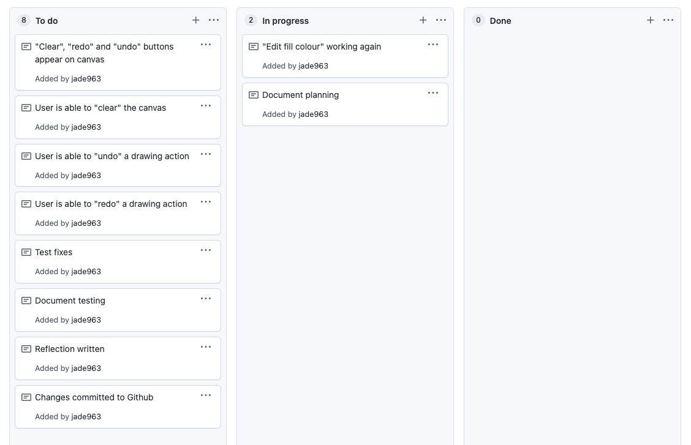Planning

Testing
Component test #1 - shortClick_Button class
This video shows the test of the new class to be used for Clear, Undo, and Redo buttons. It
differs only from the original Button class in that it automatically deselects whenever the
mouse goes Up, (one line of code in the Main.mUp() function) and
was therefore very simple to implement, and worked as planned almost immediately. Next
these buttons will be given their functions one by one.
As for the
fix to "edit fill colour", it turned out not
to be necessary - the problem was caused by an experimental line of code for
something I had tried and then abandoned towards the end of Sprint Four. Removing this code
solved the problem instantly.
One last thing I realised after this test was that I am beginning to run out of space in the control
/buttons area. This will need to be properly planned out, as I am tired of shifting everything
manually at the start of each sprint to make room for the new additions - this will be a task for
the beginning of Sprint Six.
Component test #2 - the Clear Button
This video shows a successful test of the "Clear" button. As can be seen, it selects like a normal button, and carries out its function immediately, before deselecting as soon as the user completes another action (such as pressing another button or drawing a shape) so that they are able to continue drawing without interruption.
Component test #3 - the Undo Button
This video shows the successful first test of the "Undo" button. This is the first time in this entire project to date where something has worked on the first try with no glitches or drawbacks.
Component test #4 - the Redo Button
This video shows the test of the "Redo" button. Clearly, there's a major problem: if the Redo button is clicked too many times, the program crashes and stops working properly. However, I think this glitch is just an oversight and can be fixed by an if statement identical to the one used when the "Undo" button is clicked (that is, if there is nothing in removedSet, the program does not try to run and therefore does not crash). See below:
if (this.removedSet.length > 0){
this.objectSet.push(this.removedSet[this.removedSet.length - 1])
this.removedSet.pop()
}
}
Final test
Reflections
As can be seen from the video above, I have successfully met the goals of this sprint. A minor
bug from the last sprint has been fixed, a new class has been added, and three functioning "clear",
"undo", and "redo" have been added to the canvas. This has huge implications for the user who is now
able to fix any mistakes in their drawing, and most importantly addresses the problem of the last
sprint, where the program forces a shape to be drawn even if the user's mouse leaves the canvas by
accident.
I have noticed in the course of this sprint that it is becoming more and more difficult to add new
buttons to the control panel. This is because of a lack of pre-planning as to what features will go
where. Therefore, I have decided that my next task is to re-assess the project backlog and create a
ultimate plan that will help me to rearrange the control panel to make room for all the planned
features, as well as create a clearer path forward (as I have finished all of the initially planned
sprints and am now on to "stretch goals").
Interlude: progress check
Updated project backlog
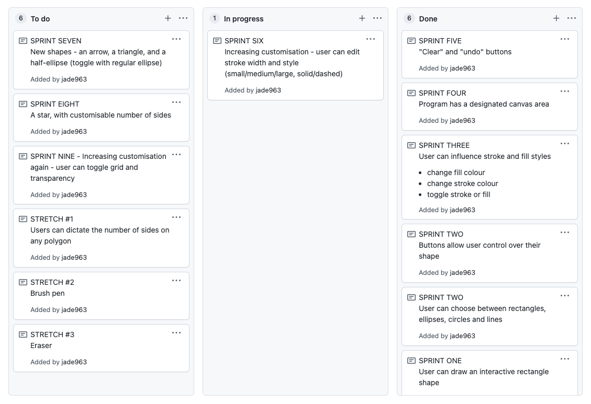"Ideal ending" sketch

Updated canvas with placeholders
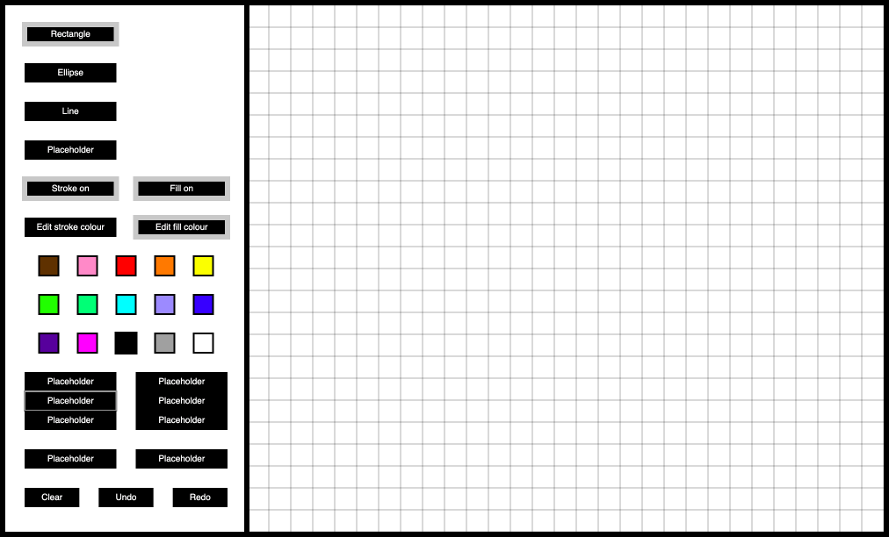Sprint Six
Aim
The aim of this sprint is to offer the user more customisation options. When it is finished, they will be able to edit stroke width and style, which will affect both the stroke of regular shapes and formal Lines.
To-do
Planning
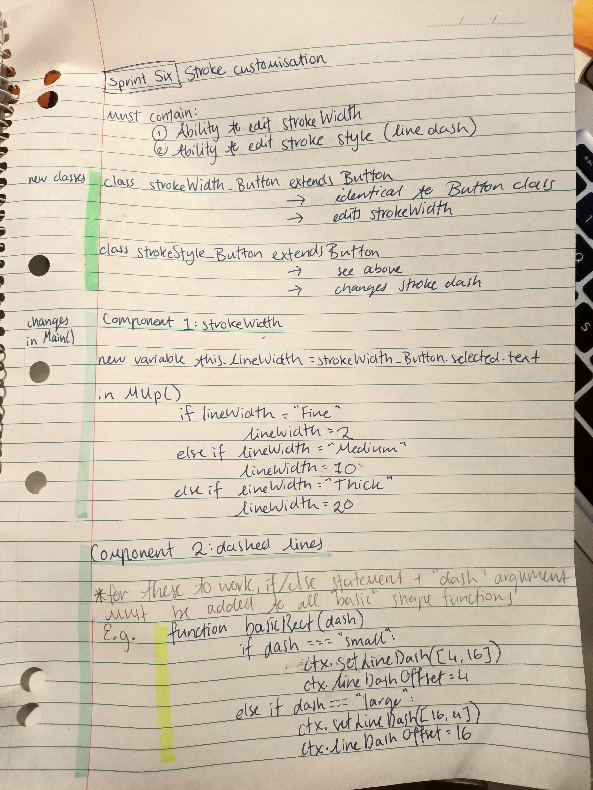 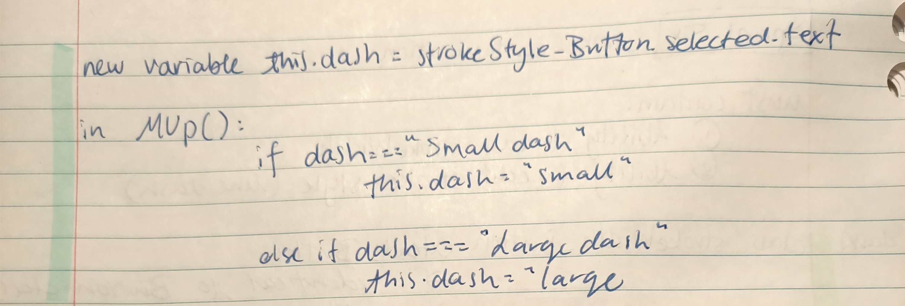Testing
Component test #1 - new classes implemented
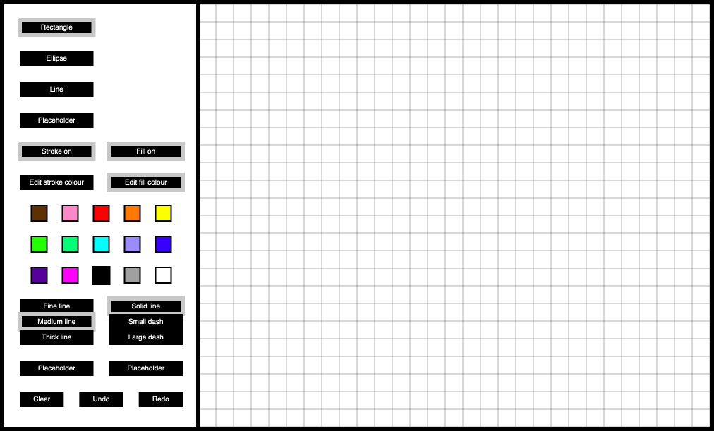This screenshot shows the newly implemented strokeWidth_Button and strokeStyle_Button classes. Since their code is identical to the original Button, there were no problems with adding these to the program. There are some slight aesthetic concerns, but aesthetics are not currently a priority.
Component test #2 - changing lineWidth
This video shows the program allowing the user to change the strokeWidth of a given shape. This
was again unexpectedly straightforward to implement, with no bugs and no corrections or alterations
needed (a welcome change.) However, the video also reveals a way in which the program could
be improved.
Although it has been suggested well before and was added to the project backlog at
one point, it is extremely obvious with this update that a guide shape should match the strokeWidth
and colour of the shape that will be created. The black guides are difficult to distinguish from
existing shapes and provide a very poor "guide" as to how the shape will look - somewhat
counterintuitive. Therefore, this will be changed in a later sprint.
Component test #3 - lineDash
Although the new lineDash element does work, the unfortunate drawback is that during the testing
process, I discovered several anomalies. Firstly, for no apparent reason, the guide shapes
already adopt the relevant "dash" status - but only on the second click. This could
be overlooked, except that it could easily create confusion for the user. I will attempt to
understand fix this issue when I am making other changes to the guide shapes.
I also discovered the "edit fill colour" and "edit stroke colour" buttons no longer work, and
when one or the other is selected, both fill and stroke change to Swatch.selected.fillC. Looking
back at previous sprints, I realised this problem was also present in Sprints Four and Five, and
was simply overlooked as the testing did not usually concern this feature. After examining Spring
Three where the Colour_Buttons were originally implemented, I realised that the problem was the
movement of a statement from mClick to mDown. After putting this statement back in mDown, the
problem was solved.
Reflections
This sprint has been completed with some success. The original goals have been met, but not
perfectly, and there are bugs that have had to be put aside in the interest of continuing progress;
because they all relate to the guide shapes, which I would like to improve anyway, I will put all of
this into its own sprint in the near future (that is, the guide shape lines transforming
appropriately
based on the size, colour, and style of the shape the user is actually drawing.)
The actual next steps to this program are adding more interesting shapes to it; that is, arrows
and triangles. This gives the user more choice than the three they are currently stuck with, and
makes the program more interesting as a whole.
Sprint Seven
Aim
The aim for this sprint is to implement new shape options that the user can choose to draw - the arrow, the triangle, and the semi- and quarte-ellipse shapes (to be toggled with the full ellipse).
To-do
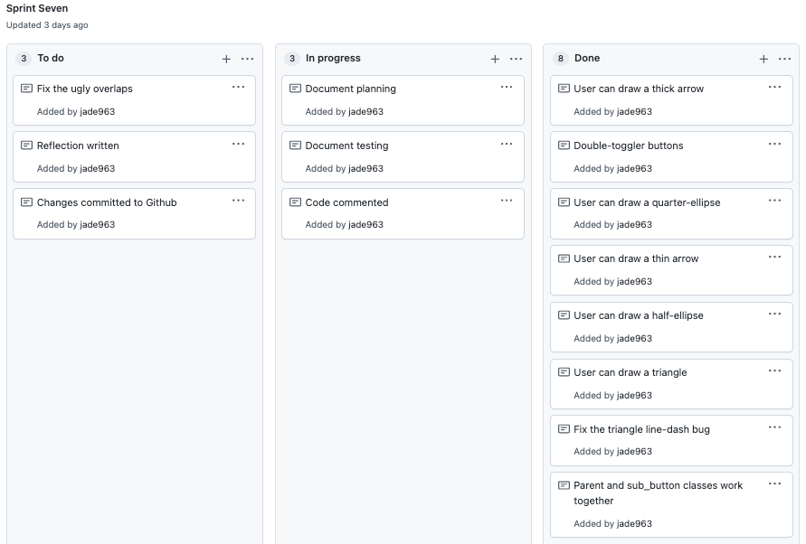Planning


Testing
Component test #1 - Triangle class
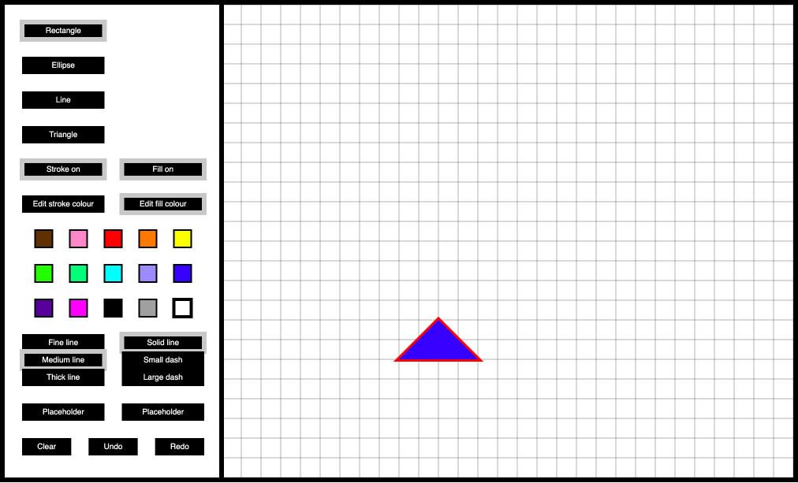This test shows the test of the new Triangle class - the shape works as planned once given x1, y1, x2, y2 coordinates etc., which enables me to move on to adding a button.
This video shows the test of the new Triangle when called with a button. The only problem appears to be with the stroked outline of the triangles being drawn; when the stroke is set to "small dash", on at least one side there appears to be a second line going over the top of the other line, creating extra dashes and an irregular appearance, while when the stroke is set to "large dash", around half of the time (why not all of the time is unclear) one line out of three appears solid while the others are dashed. I am assuming that, as with the triangles with a "short dashed" outline, this is a case of a second solid line overlapping the existing correct dashed line. Fixing this bug will be added to the task backlog for this sprint.
Component test #2 - sub_Buttons
This test shows the new class of buttons refusing to select when clicked; the console log reveals an error is being sprung by the "this.parent.selected" line of code. I will replace it with the following:
if (this.inBounds && this.amIDrawing === false && Button.selected.text === this.parent){
console.log(this.parent.text)
this.name.selected = this;
}
This video initially shows the sub_buttons refusing to select while the parent_button is
selected. This is because there is currently a piece
code in the sub_button class that prevents any other Button from being selected while
the "parent" is selected - this appears to include the sub_Buttons. When this code is
taken out, the user is able to select the sub_Buttons, but they are not able to
re-select a Button.
- I have considered giving up and just making the small and large arrows separate Button objects; however, this would only mean I have to face the same problem when I begin to implement other shapes with variations (customisable numbers of sides, styling, etc.). Ignoring this problem will result in a cluttered console, with many buttons sharing limited space.
- I have also considered the necessity of the "parent" button appearing at all, since it has no real function except to appear selected. In the end I think I would rather keep it to help with the visual organisation of the console area.
- Previously in my planning I expressed the desire to make sure the "sub_buttons" could not be selected if the "parent buttons" were not already selected. In hindsight this seems fairly redundant; therefore, going forward when the user clicks on a sub_button, that sub_button's parent button should become selected automatically. The original plan also stipulated that when the "parent button" was clicked there should be a default "sub_button" that is selected automatically. I still think this is a good idea, so it'll remain.
As a result of all of this, I have concluded that I have been taking the wrong approach. Instead of making the "parent" button a regular Button object and assigning a "child" object from the sub_Button class, I will make a parent_button class that is functionally identical to the Button, but connects only to the sub_button class.
Main.mDown()
if (parent_Button.selected === null){
this.shapeChoice = Button.selected.text;
this.parentChoice = null;
}
else if (parent_Button.selected != null){
this.parentChoice = parent_Button.selected.text;
this.shapeChoice = null;
}
Main.mClick()
if (Button.selected){
parent_Button.selected = null;
}
if (parent_Button.selected){
Button.selected = null;
}
}
The video on the left shows a test of the above code in Main.mDown(). Theoretically it should mean that once the user clicks on a parent_Button, any regular Buttons currently selected will deselect, and vice versa (just as multiple regular Button objects cannot be simultaneously selected.) However, it doesn't work - in this case, depending on which "if" statement is placed above the other in Main.mClick(), it becomes impossible to ever select a parent_Button after a Button is selected, and vice versa. Clearly, a new approach is required. Since the problem is in mClick I will be leaving mDown() untouched, and relocate information from Main.mClick to Button.mClick and parent_Button.mClick.
This video shows the successful implementation of the suggested code. I am now confident that the Button and parent_Button classes are working together as well as they need to, and can begin to integrate sub_Buttons into this relationship.
While working on the sub_Buttons, several things became clear.
- I was able to fix the bug with the triangle line dash - it was a small oversight in the code that lead to an extra line being drawn from point C to point A after, giving one out of three of the shape's edges a more solid appearance than the other two when line-dash is enabled.
- While testing I noticed that the sub_Button deselects whenever its
parent button is selected, instead of only deselecting when a standard Button is selected.
I was unable to find a way to fix this error. Having become concerned that there is
no practical way to match parent_Buttons to their sub_Buttons, I decided to combine the
two classes into one "multi_Button". Each multi_Button has a "type" variable that
identifies whether it is a parent or a sub_Button, as well as a "shape" variable that
allows the mutli_Button to identify other related buttons (e.g. so that the "Arrow",
"Stick", and "Thick" buttons recognise when one of their group is selected, but does not
react when a multi_Button of the "Ellipse" family is selected.
The video on the left shows the first test of this multi_Button class. As can be seen,
it works quite well - there is very simple placeholder code that identifies each object
by its actual name in order to have everything selecting and deselecting appropriately,
e.g.
This code is very clunky and impractical, and makes adding new multi_Button objects far more complex and time-consuming than it needs to be. It will be revisited shortly, when the Ellipse multi_Buttons are added to the program.if (this.shape === "Arrow"){ BStickArrow.selected = true BThickArrow.selected = false }
Component test #3 - Arrows & ellipses
This video shows a test of all the new shapes - the two varieties of the Arrow class and the
three varieties of the Ellipse class, two of which are new. These shapes are not currently connected
to their buttons; however, this test does show that all the new shape functions work, with the
exception of the quarter-ellipse - it doesn't work because it currently appears as an elliptical arc
from point A to point B, with a second line drawn between point A and point B, when there needs
to be a point C at a 90º angle from A & B. The design of this will need revisiting later.
In this test, the Ellipse multi_Buttons have been added. The actual multi_Button code has been left
in the same unsophisticated state as it was in the last video. As we see in the test, the
multi_Buttons belonging to the "Arrow" shape group do not deselect when the multi_Buttons belonging
to the "Ellipse" shape group . This proves that the original code is no longer suitable, and must
be made more flexible so that the program can handle the different groups of multi_Buttons. I
believe the most suitable way to do this is by assigning the various multi_Button objects to
groups, relevant to their shape, and then utilising "for" loops to ensure the buttons have the
proper sensitivity.
multi_Buttons code restructure - planning

multi_Buttons code restructure - test
This video shows the successful results of the restructured multi_Button code. multi_Buttons now select and deselect appropriately.
Sprint 7 final test
Reflections
As seen in the above test, all the goals of sprint 7 have been met. Four new
shapes and two new classes have been implemented, and several bugs fixed. The user is now able to
do significantly more with the program due to the addition of these shapes, and the multi_Button
class allows me to add far more customisable shapes in the future - in fact, it sets me up
particularly well for the next sprint, where I plan to add in a star with a customisable
number of sides.
The final result of this sprint is not perfect. The borders of the quarter-ellipse are slightly
disconnected, which is unpleasant visually. For some reason, the arrow is the only shape where the
temporary guide shape picks up the line dash (even though guide shapes are supposed to be solid.)
When multi_Buttons are selected, the pale grey outlines of the buttons that appear overlap with
other buttons in the group in an unattractive way. Due to the enormous size of this sprint,
these improvements will have to be made at the beginning of the next sprint.
There is also one problem which I am not certain I will be able to fix: the arrows and the half-
ellipse can only be drawn horizontally. This creates a lack of flexibility within the program.
Upon reviewing other drawing software such as Google Draw, I have realised that there is no real
solution for this problem - other programs tend to compensate for this by adding an option to
"flip" or "rotate" a shape after it is drawn. While this would be an interesting stretch goal
for the program, for the time being, users will have to make do.
Artwork by a seven-year-old test user
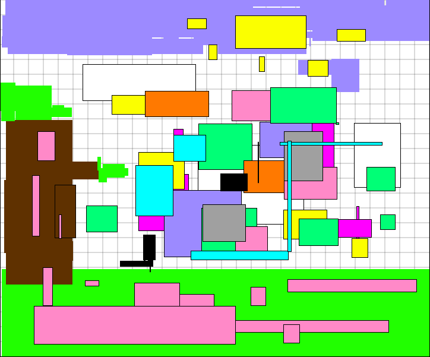Sprint Eight
Aim
The aim of this sprint is to implement a customisable star, as well as fix several small issues and bugs from the previous sprint.
To-do
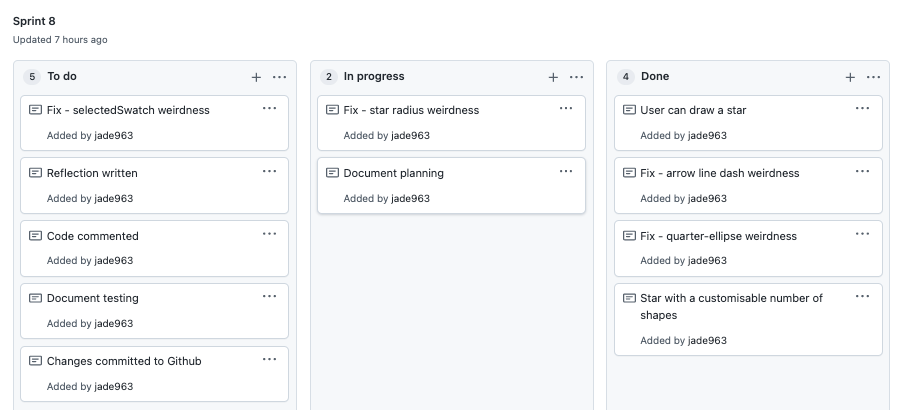Planning
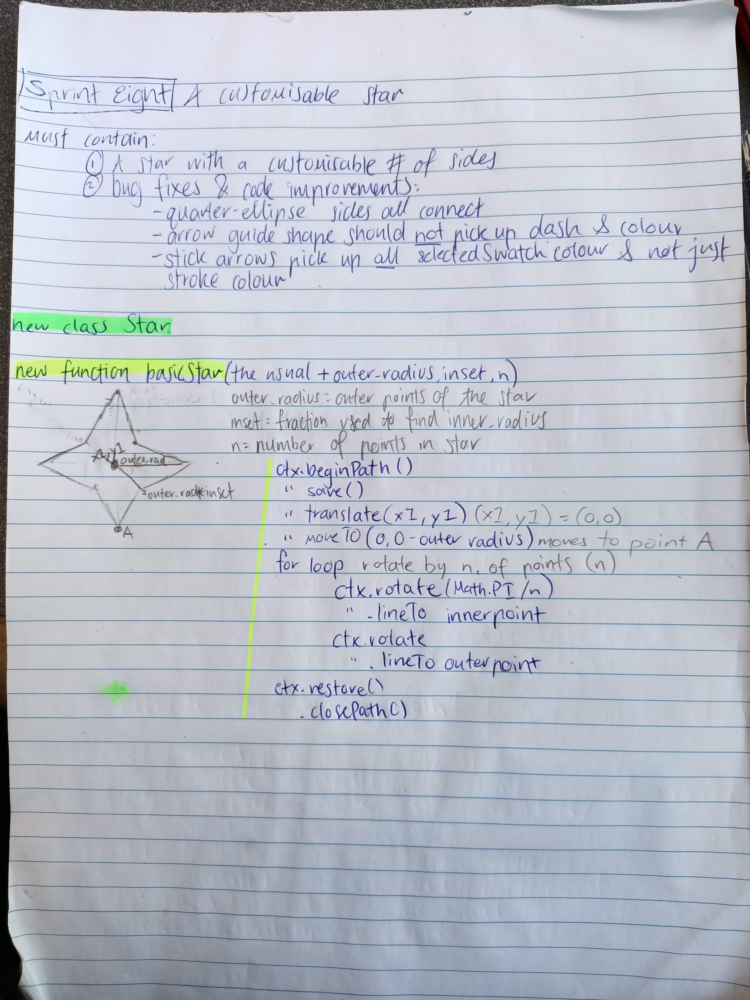Testing
This test shows the successful implementation of the star. It also shows the successful fix to the tempArrow and the ellipse class. Unfortunately, the number of problems seems to have doubled in comparison to the start of the sprint.
- When the mouse goes down to begin drawing the star, the star first appears in the left-hand corner (for a split second only). Then, for as long as the mouse remains down without moving, the star appears underneath the user's mouse with apparently a randomly generated radius. Finally, when the user begins moving the mouse, the tempStar appears in the way that it should.
- Although the arrow is no longer picking up the line dash when it shouldn't, the cost of this has been that the line dash is no longer affected for any other shape, unless the shape is changed more than once after the line dash is changed, or the user butterfly-taps on the keyboard instead of fully clicking.
- Despite all the work that was done on the canvas boundaries in sprint four, if the user butterfly-taps on a button in the button area, a shape is still sometimes drawn. The strange glitches surrounding when the user butterfly-taps instead of normal clicking are a total mystery to me, but clearly, they will have to be fixed, as they are interfering with the user experience by forcing them to spend time undoing or clearing unwanted shapes from the canvas.
- The temp_ellipse resizes with a lag, meaning the curves sometimes overlap the bounds of the temp_rectangle container, which makes the program look messy and poorly made. It has been determined that this is simply a performance issue, due to the number of buttons the program now has, and although I will investigate solutions it may simply have to be accepted as a part of the program.
Reflections
Clearly, although the goals of the sprint have been met, it is difficult to call this a
successful sprint due to the number of the problems remaining. These are problems that actively
interfere with the user experience - the line-dash glitch means that this program is no longer
fully functional, whereas the star glitch is just confusing and strange. The newly-discovered
performance issues also seem like a clear sign that it is time to stop adding complicated new
features and buttons to this project until a solution can be found.
As a result of all this, I have decided that I will abandon the transparency toggler (seen in the
test in its placeholder form) and in the next sprint, implement only the grid toggler (as I believe
this will be fairly straightforward). I will then focus on fixing bugs and performance issues so
that the program can be considered to be at least temporarily completed.
Sprint Nine
Aim
The aim of this sprint is to add an option to toggle the grid on and off, as well as finding the source of and hopefully fixing the issues with the guide star, the line dash, and control panel glitch.
To-do
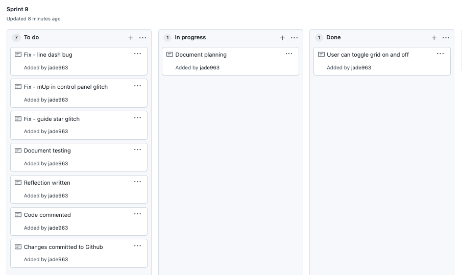Planning
Testing
Component test #1 - grid toggler
This video shows the first test of the grid toggler function. It was fortunately just as easy
to implement as I had hoped, so I can move on to the final bug fixes before the program can be
considered complete.
The first problem I want to investigate is the line dash glitch.
Component test #2 - line dash bug fix
This video shows the line dash, finally working again as it should.
The next bug on the list to investigate and fix is the problem that sometimes, when the user
butterfly-taps inside the control panel, especially when the ellipse or star is selected,
that shape is drawn underneath the control panel and is visible on the edge of the canvas.
let shouldIDraw = true
if (w_true < 1 || h_true < 1){
shouldIDraw = false
}
if (this.inBounds === true && this.amIDrawing === true && shouldIDraw === true){
// draw shapes
}
Component test #3 - butterfly-tapping bug test
Unfortunately, my proposed fix was unsuccessful. After completing the test shown above, I began
logging the width and height of each shape that was drawn as a result of the butterfly-tapping.
The console log revealed that each shape did have a width and a height variable. It is not clear to
me how this can be possible, so I have been forced to conclude that this glitch is an unavoidable
result of my program not being able to handle the sensitivity of my Mac keyboard.
However, while I was testing slight variations of my planned code, I did implement the following
in Main.mDown() in the hopes a similar strategy would work to prevent the guide star from working
so erratically.
// at the end of Main.mDown - controls if this.draw() (where the guide functions are located) is called at all
if (this.inBounds === true && this.w != 0 && this.h != 0){
this.draw();
}
As can be seen from the test below, this actually worked, meaning that what was in my opinion the worst of the program's glitches has now been fixed. Unfortunately, placing the same code in the mUp function had no effect, so the butterfly-tapping glitch remains. I now believe that there is no way to fix this last remaining glitch. Fortunately, I don't think of it as much of a barrier to the program's functionality, as it doesn't stop the user from drawing and only occurs occasionallu and if they're already clicking aimlessly around in the middle of the canvas. As a result, I believe I can finally declare this program finished.
Project reflection
During this project, I used the Agile project management technique. I began with a project backlog that included all the tasks I needed to complete in order to create the project I envisioned. I prioritised the tasks by assigning them to "sprints", which I completed one by one over a period of days or weeks. Each sprint had its own goal and miniature backlog/task list, which I created using a kanban board so that I could keep track of my progress in the sprint. I also planned each sprint using pseudocode, sketches, and other natural-language explanations so that it was clear to me and others at all points what exactly I was trying to do with a piece of code before I started writing it. After every change I made to the project, I tested it, documented that testing, and then reflected on it, using the results to formulate a plan for what to do next. I completed a comprehensive reflection on each sprint that helped me to assess the effectiveness or ineffectiveness of what I was doing, and was therefore able maintain a flexible mindset throughout as to how things should be done in my program.
To maintain this approach, I used Github.com as a tool. After each sprint was completed, I committed my finalised changes to Github, and used the website's "projects" function to regularly update both my project backlog and the kanban boards for each sprint. In this way, I could continue to enhance the program and build up its sophistication in a logical, linear, and efficient manner, as well as maintaining a history of all file versions. The Agile structure allowed me to ensure that I was consistently considering all the options for the completion of my project, as shown by the numerous failed tests that forced me to go down another track, as well as ensuring I stayed on track.
Screenshot of git commit history
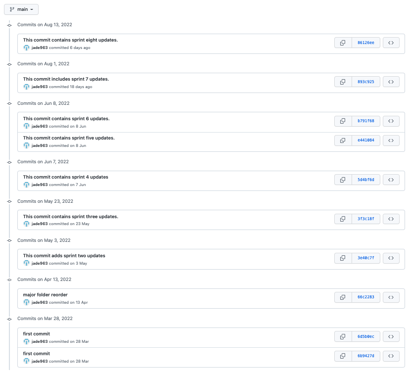Finalised project backlog
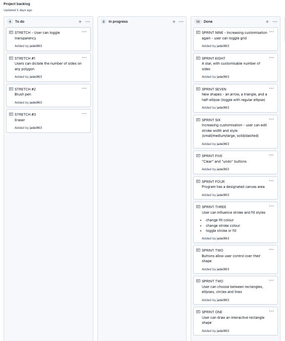Relevant Implications
Usability
A good program should be easy to use, even for someone new to the software. This program has
been designed with Nielsen’s usability heuristics in mind.
Match between the system and the real world: my program has a straightforward,
uncomplicated design, and there is a clear visual separation between the console area
(which contains buttons) and the drawing area. Users are prevented from drawing inside the
console area, and their drawings will not appear outside of the drawing area. The combination
of these two factors makes it very obvious to the user. This setup prevents them from
accidentally worsening their own experience by drawing over a button, making it impossible to
see what they are clicking on. It also mirrors the real-world drawing experience of keeping
your canvas and your materials separate, and so should make the program easier to understand.
Consistency and standards: the use of buttons in the first place provides another
example of how usability has been considered in my program design. A button has real-world
implications and is easily recognisable to most users. The buttons are also enacted with a
simple “click”, which is conventional in digital spaces. Everything the user can do with the
program is indicated by a button, so there is no need to mess around with keyboard shortcuts,
sliders, dropdown menus, etc..
Visibility of system status: the program provides constant feedback to the user about
what processes are active. When buttons are hovered over, a thick dark grey outline appears,
and when a button is selected, there is a thick light grey outline until it is deselected.
This means that the user always knows what is occurring. There is also a “guide shape” which
shows the user how their shape will appear while they are drawing, before they release their
mouse and finalise it.
User control and freedom: In the program’s current state, the user is offered more than
a dozen options of different ways their shape might appear. There is a colour palette, options
to change stroke and fill, and so forth. They also have use of “clear”, “undo”, and “redo”
buttons which allow them to fix any mistakes they might make in the drawing process, which is
very convenient and prevents them from becoming too frustrated with the program.
Recognition rather than recall: Everything the program is capable of doing is clearly
displayed on the console to the left. I have also used text instead of symbols to indicate each
buttons’ functions, largely due to my own experience of frustration with other programs
(such as Photoshop) where it is easy to spend hours trying to figure out what hundreds of
random symbols might do or clicking around through hidden menus. This way, the program does not
ask too much of the new user.
Functionality
“Functionality” means that the program functions as it should, without crashes or glitches. To ensure this, I have personally tested the program each time I added or altered code, performed a formal test after each sprint. The vast majority of these tests are documented above. I have also asked people not familiar with the project to test it for me. The use of the Agile processes was instrumental in this. At this point, there are no places where the program crashes. There is one slight glitch, in that if the user clicks aimlessly around in the centre of the drawing area a shape will appear with randomly generated width and height. I could not find a reason for this glitch. As a result, I have decided to consider it a sort of “stamp”. Because it doesn’t appear in the first place unless the user is wasting time with the program, perhaps it will motivate them to start drawing. The program also loads and acts quickly.
Future-proofing
“Future-proofing” means that this program will continue to be flexible and easy to work with into the future. The code must be easy to update and expand upon, and easy to understand for any new developer who comes to work on it. To address this, I have tried my best to keep the structure of this program simple and easy to follow. The project is organised into four main documents that deal with different aspects of the code - an html file, a “main” file where the buttons and canvas is drawn, an “init” file for storing functions and classes, and a control file where everything in the init file is called. All functions and variables are sensibly named and doctyped, and the code has been thoroughly commented. It has also been run through a JavaScript style checker in order to ensure I have followed coding conventions. This confirms that my code will be easy to read and understand for anyone with a basic knowledge of JavaScript. Finally, my use of Github, kanban and Agile processes and my practice of extensive documentation (as seen in this document) ensures that I and anyone with access to these materials have a detailed record of this program’s design, structure, and potential weaknesses.